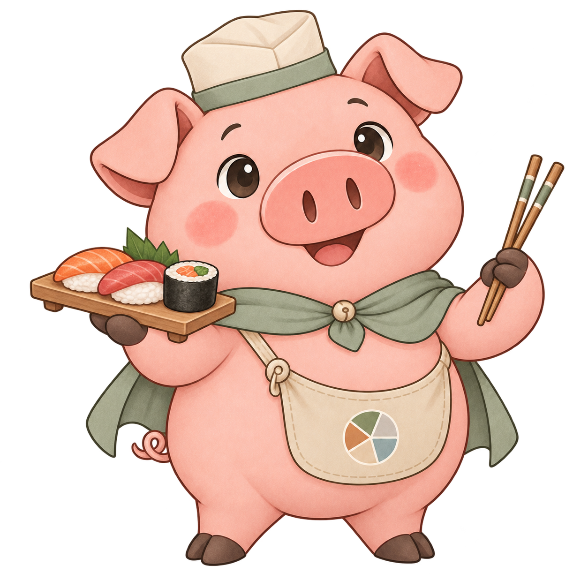
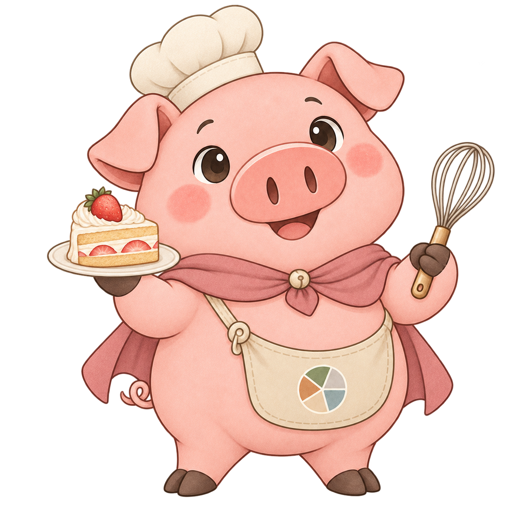

豬仔角色 / MORANDI MASCOT
拿起鑊鏟，
陪你揀好今餐。
大眼睛、灰綠披肩、柔和莫蘭迪配色。首頁陪你揀條件，輪盤陪你等揭曉，結果就換上菜式主題造型。
原生 App 的動畫素材
揀一款，看看豬仔怎樣開餐。
這裡播放與 App 相同的八格圖集作示例；網站可循環播放，App 結果則播兩次後停留。只在選擇時載入該款素材。
動畫播放器需要 JavaScript；下方仍可查看原圖及菜式對照。

一個角色，三個出場位置
從揀條件，到揭曉結果。
- 首頁：準備開餐
先揮手迎賓，再播放流口水動作，陪你設定距離、菜式、評分及地區。
- 輪盤：拋鑊炒菜
豬仔在輪盤中央循環拋鑊、接回食材；是逐格手部及表情動作，不再只旋轉整張圖片。
- 結果：換上相關造型
按本輪抽中的菜式播放吃東西、咀嚼或其他相應動作，兩個循環後停留。「重抽餐廳」保留菜式主題，「重抽菜式」跟隨新菜式轉換。
造型示例
抽到壽司、火鍋，還是甜品？


角色插圖示例，並非餐廳食物照片，也不代表個別餐廳一定供應圖中食物。
13 組主題 / 48 種菜式
相關菜式，共用主題。
App 內置 13 組菜式動畫（104 格主題動作），對應 48 種菜式；同組菜式共用造型動畫。另有迎賓、拋鑊及流口水三款，共 16 張透明圖集，並保留原本靜態圖。以下為原圖示例及完整菜式對照。
| 造型主題 | 對應菜式 |
|---|---|
| 中菜及點心 | 中菜、粵菜、上海菜、北京菜、川菜、湘菜、客家菜、福建菜、浙江菜、台灣菜、點心、粉麵、粥品、茶餐廳 |
| 日式及拉麵 | 拉麵、日式、居酒屋 |
| 壽司 | 壽司 |
| 韓式 | 韓式 |
| 東南亞 | 泰國菜、越南菜、新加坡菜、馬來西亞菜 |
| 咖喱 | 印度菜、尼泊爾菜、巴基斯坦菜、孟加拉菜 |
| 西式 | 西餐、法國菜、意大利菜、西班牙菜、美式、英國菜、德國菜、波蘭菜、澳洲菜 |
| 燒烤 | 扒房、燒烤、日式燒肉／串燒、阿根廷菜 |
| 素食 | 素食 |
| 海鮮 | 海鮮 |
| 火鍋 | 火鍋 |
| 甜品 | 甜品 |
| 薄餅及卷餅 | 土耳其菜、地中海菜、墨西哥菜、拉丁美洲菜 |
跟隨抽中菜式，不猜餐廳風格。
多菜式餐廳使用本輪實際抽中的菜式配圖，並非取餐廳第一個分類。新菜式未有對照時，顯示拿鑊原造型；角色不會改變任何篩選或抽選機率。
無障礙與離線使用
動作可以停，造型仍然在。
App 在背景時暫停角色播放；停用 Android 系統動畫後，顯示原本靜態造型，抽選仍會顯示相同結果。圖片隨 App 打包，顯示角色毋須額外網絡、帳戶或金鑰，亦支援日夜模式。
本輪同時修正已完成抽選在重新啟動後仍沿用失效候選快取的問題：保留上次結果供查看，下一輪重新查詢符合現有條件的候選。